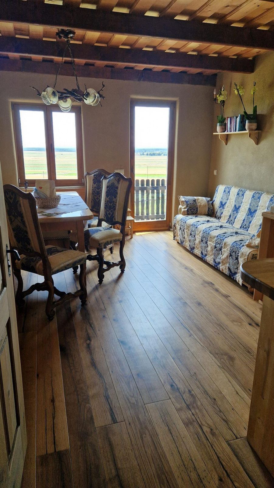
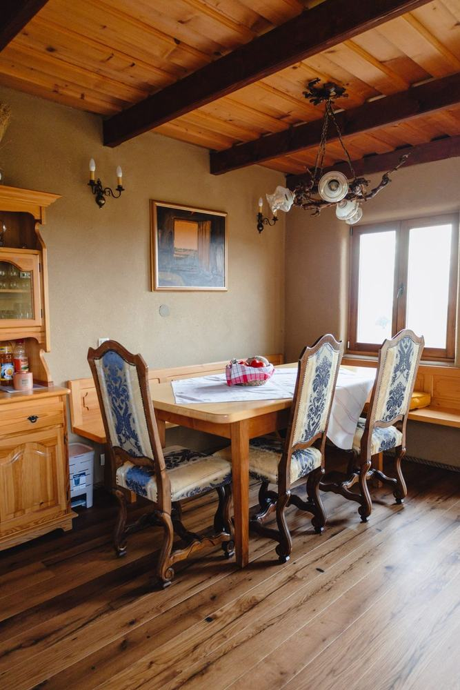
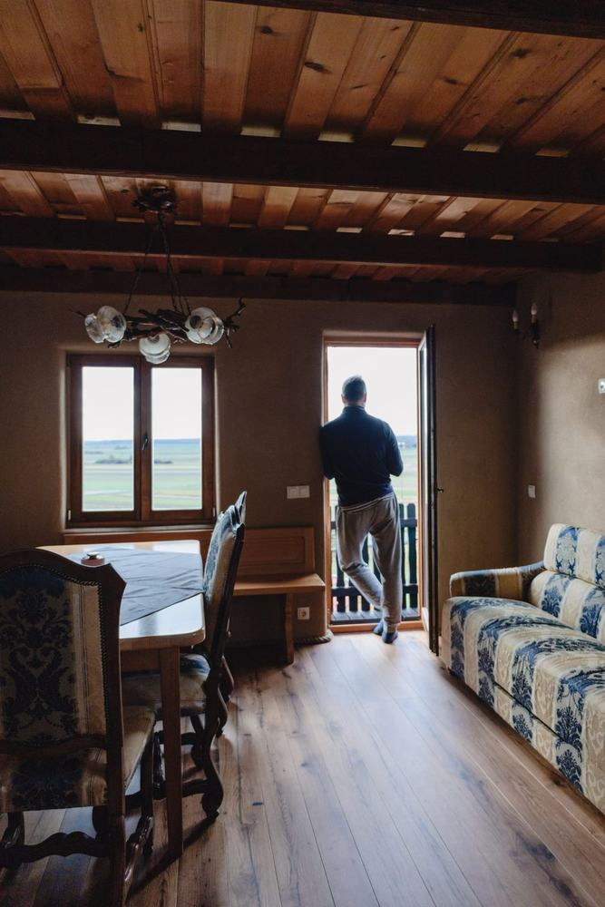

Nastanitev
Počitniška hiška Clavis
Obnovljena hiška iz lesa in gline, ki zrcali preteklost prekmurske pokrajine.
Opis
Hiška v kratkem
Hiška je obnovljena, vendar je ohranjena prvotna lesena konstrukcija sten in stropov. Postelje so iz akacijevih hlodov, kavč v dnevni sobi in stoli za veliko masivno mizo so obnovljeni in prevlečeni s posebno izbranim materialom in vzorcem. Luči so stilske. Oprema je iz polnega lesa, podi so stari hrastovi.
Vhodna vrata so avtentična, stara več kot 100 let, zato sta tudi ključavnica in ključ takšna, kot ju najbrž niste vajeni.

Na kratko
Kaj je v hiški
Kuhinja
- sodobno opremljena
- pomivalni stroj
- posoda za kuhanje, pribor, pekači
- kavni aparat, grelnik za vodo, ročni mešalnik
- osnovne potrebščine (sol, sladkor, poper, kava)
Kopalnica in bivanje
- brisače, toaletni papir, sušilec za lase
- milo za roke in za tuširanje
- hišni copati
- dodatna posteljnina, brisače in likalnik v komodi v predprostoru
- košarica dobrodošlice, ponudba pijač in lokalnih dobrot
Splošno
- brezplačen Wi-Fi
- tablični računalnik z aplikacijo EON za televizijske kanale in s povezavami do lokalnih znamenitosti, gostiln in kopališč
- balkon in terasa
- parkirišče neposredno pred hiško
- vinska klet

Wellness
Savna in vroča kopel
Finska savna je na voljo 24 ur na dan. Delovanje si lahko nastavite do 5 ur vnaprej, da vas ob predvidenem času čaka primerno ogreta.
Peneča vroča kopel je prav tako na voljo 24 ur na dan, predvidena je za največ tri osebe. Ogreta je na 36 stopinj Celzija.
Rjuhe in kopalni plašči so na voljo v sobah.
Hišni red
Prihod, odhod, dobro vedeti
- Prihodi so predvideni po 16.00. Zgodnejši prihod je možen po dogovoru. Prihod v nočnih urah je treba najaviti vsaj dan prej.
- Odhodi so predvideni do 10.00. Kasnejši odhod je možen po predhodnem dogovoru, a le če je hiška tisti dan prosta.
- Po 22.00 se vzdržuje red in mir.
- V hiški je kajenje prepovedano; na voljo sta balkon in terasa.
- Živali so dovoljene, če so hišno čiste in socializirane.
- Stene so glinene, pod pa lesen, zato prosimo za posebno skrb in previdnost. Stavba je v celoti lesena, požarna ogroženost je zato visoka.
Zgodnejši prihod in druge dogovore uredite pri Elizabeti Markovič Toplak, +386 41 42 42 43.

Rezervacija
Cenik, koledar zasedenosti in rezervacija
Cenik, koledar zasedenosti in spletna rezervacija so trenutno na obstoječi strani podjetja. V tem osnutku cen nismo prepisovali.